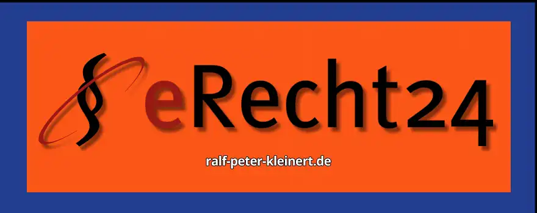

Inhalte des Artikels eRecht24 der Anwalt für Internetrecht
Liebe Leserinnen und Leser,
wenn Sie auf meiner Website surfen, stellen Sie sicherlich fest, dass es sich in jedem Artikel irgendwie immer um das Thema IT-Sicherheit, Sicherheit für Computer und alle dazugehörigen Produkte dreht. Ja, das ist auch alles total wichtig. Doch meines Erachtens gehört zur kompletten Sicherheit auch die rechtliche Absicherung. Und da komme ich direkt auf einen Punkt, der für jeden Webseitenbetreiber von Bedeutung ist: rechtliche Sicherheit im Netz.
Seit über fünf Jahren bin ich Premiumkunde bei eRecht24 – und das hat seine Gründe. Wie bei allen Dienstleistungen und Produkten auf dieser Welt gibt es auch Internetanwaltsseiten wie Sand am Meer. Aber ich habe mich für eRecht24 entschieden, weil ich nicht nur das Gefühl habe, dort gut aufgehoben zu sein, sondern auch, weil ich seitdem keine Probleme mit der Datenschutzbehörde hatte. Und das soll was heißen.
eRecht24, unter der Leitung von Rechtsanwalt Sören Siebert, ist eine Plattform, die sich auf die rechtliche Absicherung von Webseiten spezialisiert hat. Ob es um Datenschutz, Impressumspflichten oder AGBs geht – hier gibt es alles, was man benötigt, um sich als Betreiber rechtlich abzusichern. Gerade in Zeiten, in denen Abmahnungen schnell mal teuer werden können, ist es gut, einen verlässlichen Partner zu haben.
Ich finde, rechtliche Sicherheit ist genauso wichtig wie technische Maßnahmen. Was nützt die beste Firewall, wenn man rechtlich angreifbar ist? Und genau deshalb verlasse ich mich auf eRecht24. Die Plattform bietet klare, verständliche Anleitungen und fertige Rechtstexte, die man mit wenigen Klicks in seine Website einbauen kann. Und das Beste: eRecht24 hält sich stets an die neuesten rechtlichen Vorgaben. Das heißt, Sie müssen sich keine Sorgen machen, dass Ihre Datenschutzerklärung von gestern ist.
Für mich als Premiumkunde gibt es außerdem den Vorteil, dass ich immer direkten Zugriff auf die neuesten Updates und einen erweiterten Support habe. Egal ob kleine oder große Fragen – ich kann mich darauf verlassen, dass mir schnell und professionell geholfen wird.
Im Netz sicher unterwegs zu sein bedeutet eben mehr, als nur auf die Technik zu achten. Wer seine Website betreibt, muss auch rechtlich auf der sicheren Seite stehen. Und für mich gibt es da keine bessere Wahl als eRecht24. Ganz einfach: eRecht24 hilft Ihre Webauftritte rechtssicher zu machen und zu halten.
Im Grunde hat heutzutage fast jedes Unternehmen, aber auch viele Privatleute eine Website oder einen Blog. Der Gesetzgeber verlangt jedoch eine ganze Menge von den Betreibern einer solchen Seite. Wenn Sie Ihre Website betreiben, müssen Sie nicht nur für eine gute IT-Sicherheit sorgen, sondern auch sicherstellen, dass alles rechtlich in Ordnung ist. Was nützt Ihnen schließlich ein Bollwerk an Computersicherheit, wenn Sie rechtlich total daneben liegen? Genau hier kommt eRecht24 ins Spiel.
eRecht24 ist eine Plattform, die sich auf Internetrecht spezialisiert hat. Sie bietet umfassende Unterstützung bei allen rechtlichen Fragen, die Sie als Webseitenbetreiber haben könnten. Dazu gehören unter anderem Themen wie die Impressumspflicht, die Datenschutzerklärung und natürlich auch der Umgang mit Cookies. Gerade durch die DSGVO sind die Anforderungen an Webseitenbetreiber enorm gestiegen, und Fehler können teuer werden. eRecht24 hilft Ihnen dabei, diese Fallstricke zu vermeiden.
Darüber hinaus stellt eRecht24 verschiedene Tools zur Verfügung, die es Ihnen erleichtern, Ihre Website rechtssicher zu gestalten. Dazu zählen Impressum- und Datenschutzerklärungsgeneratoren, die es ermöglichen, rechtssichere Texte einfach und schnell zu erstellen. Auch AGBs für Ihren Online-Shop oder Dienstleistungen können Sie dort aufsetzen lassen, ohne dass Sie selbst juristische Kenntnisse mitbringen müssen. Besonders wertvoll sind die regelmäßigen Updates, die Ihnen zeigen, wann rechtliche Anpassungen notwendig sind – schließlich ändert sich das Internetrecht ständig.
Für Premium-Mitglieder bietet eRecht24 noch mehr: Sie bekommen Zugang zu Webinaren und Praxis-Guides, die Ihnen aktuelle Themen erklären, zum Beispiel, wie Sie rechtssicher Google Analytics oder andere Tracking-Tools einsetzen können. Ebenso gibt es spezifische Lösungen für den Umgang mit Urheberrechten oder der Haftung bei fremden Inhalten. Der Service von eRecht24 geht also weit über das hinaus, was man auf den ersten Blick vermuten würde.
Wenn Sie sich fragen, ob Ihre Seite bereits alle rechtlichen Anforderungen erfüllt, dann können Sie bei eRecht24 sogar Ihre Website durchchecken lassen. Dies gibt Ihnen die Sicherheit, dass Ihre Seite den rechtlichen Anforderungen entspricht, ohne sich selbst durch den Paragrafendschungel kämpfen zu müssen.
Was mir persönlich bei eRecht24 gefällt, ist die einfache Handhabung und die verständliche Sprache. Selbst komplexe rechtliche Themen werden so aufbereitet, dass man sie gut nachvollziehen kann – ein Service, den ich seit mehr als fünf Jahren als Premiumkunde nutze und der mir immer geholfen hat, rechtlich auf der sicheren Seite zu stehen.
Ich empfehle eRecht24, weil ich den Dienst schon seit vielen Jahren nutze und in dieser Zeit stets auf der sicheren Seite war. Es gibt unzählige Anbieter im Bereich Internetrecht, aber für mich hat sich eRecht24 bewährt, weil die Plattform nicht nur umfassende rechtliche Unterstützung bietet, sondern auch stetig aktualisiert wird. Das bedeutet, dass ich immer rechtzeitig über neue rechtliche Vorgaben informiert werde und meine Website rechtssicher bleiben kann. Gerade durch die immer komplexeren Datenschutzbestimmungen, wie die DSGVO, ist es wichtig, auf einen Dienst zu setzen, der immer am Puls der Zeit ist.
Was mir besonders gefällt, ist die unkomplizierte Handhabung. Mit den verschiedenen Generatoren für Impressum, Datenschutzerklärungen oder AGBs ist es möglich, in wenigen Schritten rechtssichere Dokumente zu erstellen, ohne selbst tief in die juristischen Details eintauchen zu müssen. Dazu kommt, dass eRecht24 in verständlicher Sprache erklärt, was nötig ist und warum – das schätze ich sehr, da man nicht erst ein Jura-Studium absolvieren muss, um seine Website rechtlich abzusichern.
Die Premium-Mitgliedschaft hat für mich den zusätzlichen Vorteil, dass ich auf Webinare und exklusive Praxis-Guides zugreifen kann, in denen aktuelle Themen behandelt werden. So bleibt man immer auf dem neuesten Stand und kann sicher sein, dass die eigene Website nicht plötzlich abgemahnt wird, weil man eine neue Vorschrift übersehen hat.
Wenn man so lange wie ich mit einem Dienst zufrieden ist, dann kann man ihn guten Gewissens weiterempfehlen. eRecht24 hat mir geholfen, rechtliche Probleme zu vermeiden und mich auf das Wesentliche zu konzentrieren: meinen Content.
Kostenlose IT-Sicherheits-Bücher & Information via Newsletter
Bleiben Sie informiert, wann es meine Bücher kostenlos in einer Aktion gibt: Mit meinem Newsletter erfahren Sie viermal im Jahr von Aktionen auf Amazon und anderen Plattformen, bei denen meine IT-Sicherheits-Bücher gratis erhältlich sind. Sie verpassen keine Gelegenheit und erhalten zusätzlich hilfreiche Tipps zur IT-Sicherheit. Der Newsletter ist kostenlos und unverbindlich – einfach abonnieren und profitieren!
Was ich im Webdesign ausprobiert habe, ist die automatische Synchronisation von Impressum und Datenschutzerklärung in Joomla und WordPress. Es gibt dafür spezielle Plugins, die es einem wirklich leicht machen. Mit diesen Tools müssen Sie sich "fast" um nichts mehr kümmern, da sie automatisch die notwendigen rechtlichen Dokumente auf dem neuesten Stand halten. Gerade in WordPress gibt es zahlreiche Erweiterungen, die dafür sorgen, dass rechtliche Texte wie Impressum und Datenschutzerklärung immer aktuell und an den richtigen Stellen eingebunden sind.
Besonders hervorheben möchte ich das Safesharing-Tool von eRecht24, das für mich ebenfalls ein absolutes Highlight ist. Wer sicherstellen möchte, dass er beim Teilen von Inhalten in sozialen Netzwerken keinen Ärger mit den Datenschutzbehörden bekommt, sollte sich dieses Tool unbedingt anschauen. Es sorgt dafür, dass die datenschutzrechtlichen Vorgaben eingehalten werden, ohne dass persönliche Daten der Nutzer automatisch weitergegeben werden. Eine wirklich runde Sache, die einem viele Sorgen abnehmen kann, vor allem, wenn man keine Lust auf Abmahnungen oder rechtliche Komplikationen hat.
Die Kombination aus rechtssicheren Texten und der technischen Unterstützung durch diese Plugins macht es für Webseitenbetreiber einfach, rechtlich auf der sicheren Seite zu bleiben, ohne jedes Detail selbst im Blick behalten zu müssen. Ein echter Mehrwert, den ich nicht mehr missen möchte.
Über den Autor: Ralf-Peter Kleinert
Über 30 Jahre Erfahrung in der IT legen meinen Fokus auf die Computer- und IT-Sicherheit. Auf meiner Website biete ich detaillierte Informationen zu aktuellen IT-Themen. Mein Ziel ist es, komplexe Konzepte verständlich zu vermitteln und meine Leserinnen und Leser für die Herausforderungen und Lösungen in der IT-Sicherheit zu sensibilisieren.
Aktualisiert: Ralf-Peter Kleinert 15.10.2024